OpenReview Application & System Architecture Guide
OpenReview (authored by Maruthu Chakravarthi) is a studio-grade visual effects (VFX) sequence playback, high-dynamic-range (HDR) color inspection, multi-source compositing comparison, and collaborative dailies review workstation application. Designed with a high-contrast 3DEqualizer / Foundry Nuke / Autodesk RV aesthetic, OpenReview combines a non-blocking multi-threaded C++/Python media engine with an OpenGL 3.3+ Core Profile GLSL fragment shader pipeline and OpenColorIO (OCIO) v2 color science.
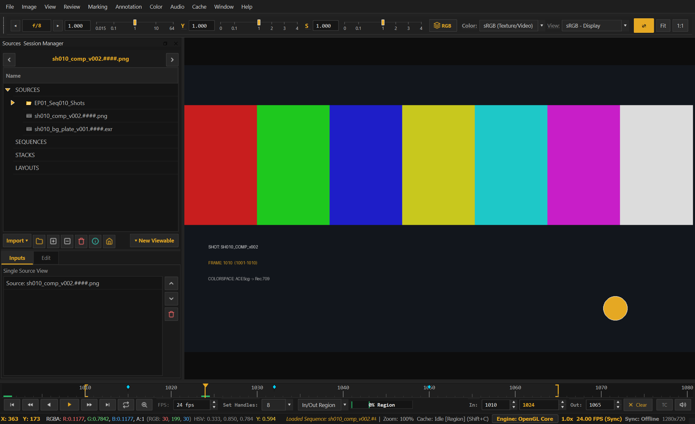
⚡ Hardware-Accelerated Playback
OpenGL 3.3+ Core Profile viewport with double-buffered Asynchronous PBO (Pixel Buffer Object) DMA streaming, native RGBA16F / RGBA32F floating-point textures, and multi-threaded disk prefetching.
🎨 ACES & OpenColorIO v2
Zero-latency 9-stage GLSL color grading pipeline supporting scene-linear ACEScg, Cineon/DPX Log, ARRI LogC, 3D LUTs (.cube, .3dl), ASC CDL (.cdl, .cc, .ccc), and Out-of-Range zebra warnings.
🔍 Deep VFX Inspection
Interactive angled A/B split wipes, Difference & Inverted Difference modes with multiplier boost, multi-layer EXR AOV pass switching, Stereoscopic 3D modes, and persistent 32-bit float area color samplers.
🌐 Collaborative & Extensible
Real-time TCP Multi-User Remote Dailies Sync (synchronized playback, live strokes, grades, and chat), JSON-RPC 2.0 Python SDK for Nuke/Maya/Houdini, and a dynamic Plugin/Package Manager.
1. System Architecture
OpenReview is engineered around strict separation of concerns across four decoupled architectural layers. All heavy file decoding and sequence prefetching execute asynchronously on background worker threads, while all pixel color transformations execute inside compiled GLSL fragment shaders on the GPU—guaranteeing responsive UI interaction and frame-accurate playback even on 4K/8K 16-bit and 32-bit OpenEXR sequences.
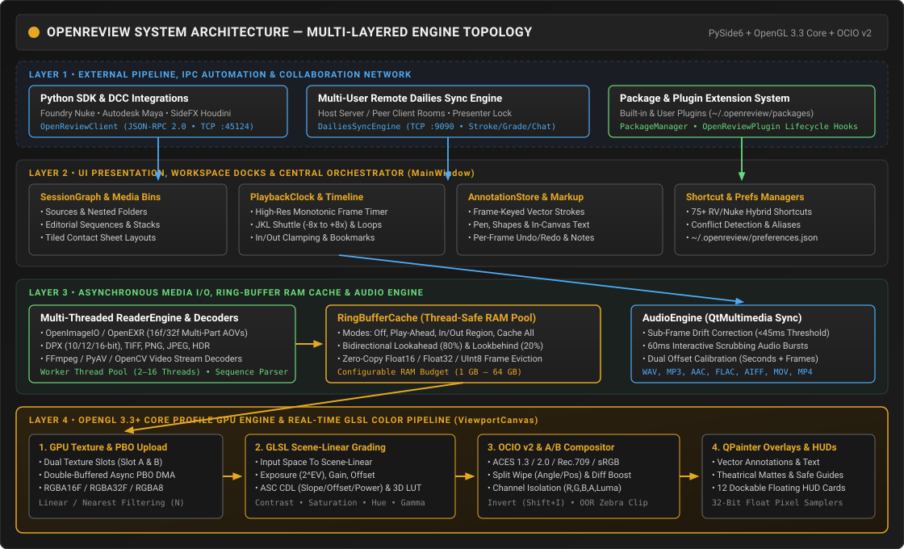
1.1 Detailed Breakdown of the Four Architectural Layers
| Layer | Core Modules | Architectural Responsibilities & Design Patterns |
|---|---|---|
| Layer 1: External Ecosystem, IPC & Collaboration Network |
network/ipc_server.pynetwork/sync_engine.pysdk/client.py, sdk/dcc.pypackages/package_manager.py
|
|
| Layer 2: Application Orchestration, Data Models & UI |
ui/main_window.pymodels/session_graph.pymodels/annotations.pycore/clock.pycore/shortcuts.py
|
|
| Layer 3: Asynchronous Media I/O, RAM Cache & Audio Engine |
core/reader.pycore/image_io.pycore/video_reader.pycore/cache.pyaudio/audio_engine.py
|
|
| Layer 4: Hardware GPU & GLSL Color Pipeline |
widgets/viewport.pycolor/shader_builder.pycolor/ocio_manager.pycolor/lut_manager.py
|
|
1.2 The 9-Stage GLSL Fragment Shader Color & Compositing Pipeline
Every frame rendered in ViewportCanvas passes through a dynamically compiled GLSL 330 Core fragment shader (color/shader_builder.py). Performing all color science on the GPU preserves full 32-bit floating-point dynamic range (preventing highlight clamping) and allows real-time slider adjustments during 60 FPS playback without invalidating the RAM frame cache.
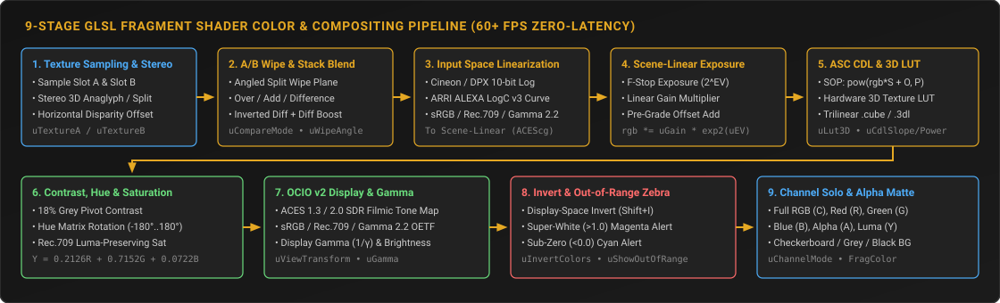
- Stage 1 — Dual Texture Sampling & Stereoscopic 3D Reconstruction: Samples normalized UV coordinates from
uTextureA(anduTextureBwhen comparing or viewing stereo pairs). Applies horizontal convergence disparity offsets and reconstructs Anaglyph (Red-Cyan), Side-by-Side, or Stereo Difference views. - Stage 2 — Interactive A/B Wipe & Multi-Layer Stack Blending: Evaluates the signed distance from the interactive wipe plane (defined by
uWipePositionanduWipeAngle) or blends Slot A and Slot B using Over (Alpha Composite), Add, Difference (|A - B| * uDiffBoost), or Difference Inverted (1.0 - |A - B| * uDiffBoost). - Stage 3 — Input Colorspace Linearization: Converts encoded camera/file encodings into scene-linear working space (
ACEScg):- Cineon / DPX 10-bit Log: Applies standard film density log-to-linear transfer curve with black point (95) and white point (685) reconstruction.
- ARRI ALEXA LogC (v3 & Film): Applies official ARRI Alexa wide-gamut LogC linearization equations.
- sRGB / Rec.709 / Gamma 2.2: Applies exact EOTF inverse power curves to linearize display-referred media.
- Stage 4 — Scene-Linear Exposure (EV), Gain & Pre-Grade Offset: Multiplies scene-linear RGB values by linear gain and F-stop exposure compensation before adding per-channel offset:
rgb = (rgb * uGain * exp2(uExposureEV)) + uOffset. - Stage 5 — ASC CDL (Slope, Offset, Power, Saturation) & 3D Hardware LUT: Applies American Society of Cinematographers Color Decision List math
pow(clamp(rgb * Slope + Offset, 0.0), Power)followed by trilinear hardware interpolation across the bound 3D LUT texture (.cubeor.3dl). - Stage 6 — Pivot Contrast, Hue Rotation & Luma-Preserving Saturation: Evaluates contrast around an 18% middle-grey scene-linear pivot (
0.18), rotates chrominance via a 3x3 luminance-preserving hue matrix, and scales saturation using Rec.709 luma weights (Y = 0.2126*R + 0.7152*G + 0.0722*B). - Stage 7 — OpenColorIO v2 Display View Transform & Display Gamma: Applies the selected view transform (ACES 1.3 / 2.0 Filmic Tone Map, sRGB, Rec.709, Gamma 2.2, or Raw Bypass), followed by display power gamma (
1.0 / uGamma) and display brightness offset. - Stage 8 — Display-Space Color Inversion & Out-of-Range (OOR) Zebra Detection: When Invert Colors (Shift+I) is active, computes
rgb = 1.0 - rgb. When Out-of-Range Highlight is enabled, flags clipped super-white pixels (> 1.0) in high-contrast Magenta and sub-zero negative values (< 0.0) in Cyan. - Stage 9 — Channel Isolation & Background Compositing: Isolates
RGB(C),Red(R),Green(G),Blue(B),Alpha(A), orLuminance(Y) and composites premultiplied/unpremultiplied alpha over the user-selected canvas background (Solid Black, 18% Neutral Grey, 50% Grey, Solid White, or Checkerboard).
1.3 Asynchronous RingBufferCache & Multi-Threaded Prefetching
The RingBufferCache (core/cache.py) and ReaderEngine (core/reader.py) work in tandem to guarantee uninterrupted playback:
- Directional Lookahead Windowing: In
Play-Aheadmode, 80% of the RAM budget is allocated ahead of the current playback direction (forward or reverse) and 20% is retained behind the playhead for instant step-back review (configurable vialookahead_behind_pct). - Scrub Prioritization & Settle Timer: During active timeline or canvas mouse scrubbing, background prefetch threads yield 100% CPU priority to the interactive scrub frame. A 150ms settle timer resumes background lookahead caching immediately after the user stops dragging.
- Coalesced Cache UI Updates: Timeline cache bar repaints are coalesced at ~15 FPS (66ms interval) so rapid multi-threaded frame insertions never saturate the Qt GUI event loop.
- Smart Laptop / Low-Spec Proxy Mode: When
fast_playback_laptop_modeis enabled (or on integrated GPUs), frames exceeding 2K resolution are dynamically downsampled 2x during active playback and restored to full 1:1 native resolution the instant playback pauses.
1.4 Supported Media & Pipeline Formats
| Format / Extension | Bit Depth & Compression Support | Auto-Detected Colorspace | Primary Studio Pipeline Role |
|---|---|---|---|
.exr, .hdr |
16-bit Half Float / 32-bit Float (Uncompressed, ZIP, ZIPS, PIZ, RLE, PXR24, B44, DWAA, DWAB) | ACEScg (Scene-Linear) |
Final VFX Composites, Multi-Part CG Render Passes (AOVs), Cryptomattes, HDR Lighting Environments |
.dpx, .cin |
10-bit Log, 12-bit, 16-bit Linear/Log | Cineon Log |
Digital Intermediate (DI) Scans, Camera Plates, Master Archival Deliveries |
.tif, .tiff |
8-bit, 16-bit Integer, 32-bit Float (Uncompressed, LZW, Deflate) | Metadata / sRGB |
Matte Paintings, Displacement/Normal Maps, Photogrammetry Scans |
.png, .jpg, .jpeg, .bmp, .tga, .webp |
8-bit & 16-bit RGBA / RGB | sRGB (Texture/Video) |
Concept Art, Storyboards, Slates, Quick Review Turntables, Reference Stills |
.mov, .mp4, .mkv, .avi, .webm, .mxf, .m4v |
Apple ProRes (422, 422 HQ, 4444, XQ), Avid DNxHD/DNxHR, H.264/AVC, H.265/HEVC | Probed via FFmpeg tags (Rec.709, ARRI LogC, sRGB) |
Editorial Cuts, Offline Reference Movies, Studio Dailies Quicktimes, Playblasts |
.wav, .mp3, .aac, .flac, .aiff, .ogg, .m4a |
16-bit / 24-bit / 32-bit Float PCM & Compressed Audio | Raw Audio |
External Production Sound Mixes, Temp Foley, Dialogue Stems |
.ovr, .json |
UTF-8 JSON Structured Session Graph | Preserves Per-Source State | OpenReview Persistent Session Files (Playlists, Stacks, Layouts, Grades, Bookmarks & Vector Markup) |
2. Workspace Layout & Dock Panels
OpenReview's interface is built around a central, non-obscured hardware OpenGL viewport surrounded by modular, dockable, and floatable studio panels. Every dock panel supports drag-and-drop tear-off for multi-monitor setups (e.g. placing the Viewport fullscreen on a calibrated grading reference monitor while keeping the Sources Bin, File Browser, and HUDs on a secondary control screen).
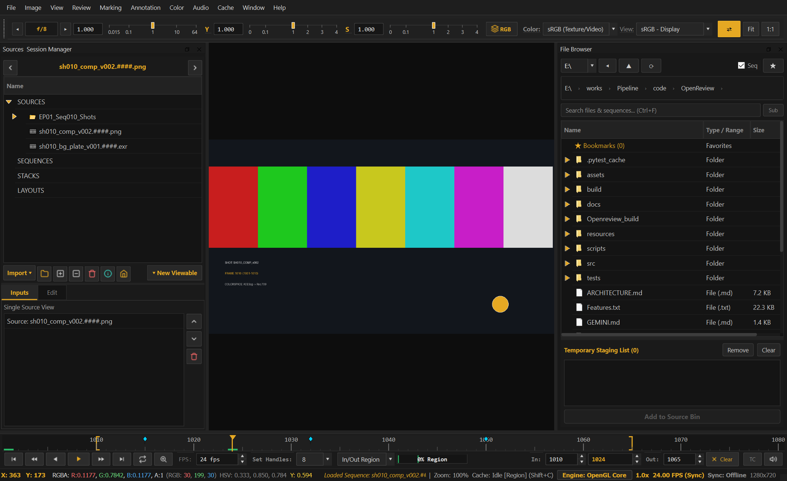
2.1 Top Control Bar (widgets/top_bar.py)
The Top Control Bar provides immediate, single-click access to the most frequently used grading, channel isolation, view transform, and overlay controls without opening modal dialogs. It is housed inside a movable, floatable QToolBar.
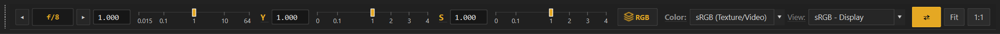
- Channel Isolation Selector: Instant dropdown & hotkeys for
RGB(C),Red(R),Green(G),Blue(B),Alpha(A), andLuminance(Y). Pressing an active channel hotkey a second time toggles back to fullRGB. - Exposure (EV) & Linear Gain Control: Dual-coupled Foundry Nuke-style exposure control. Adjusting EV stops (
-6.0to+6.0 EV) updates the linear gain multiplier (Gain = 2^EV), and dragging the double-width Gain slider updates EV.Ctrl+Clickor double-clicking the slider handle snaps immediately back to0.0 EV (1.0x Gain). - Display Gamma Control: Adjusts viewer power curve from
0.10to4.00(default1.00) with a one-click reset button (Ctrl+Alt+G). - Saturation Slider: Luma-preserving Rec.709 saturation from
0.00(monochrome) to4.00. - Input Colorspace & Display View Transform Dropdowns: Live selectors bound to
OCIOManagerallowing per-source input colorspace overrides and studio display/view LUT switching. - Stereo 3D Mode Selector: Switches between
2D (Off),Left Eye,Right Eye,Anaglyph (Red-Cyan),Side-by-Side (Split), andStereo Difference. - Canvas Scrub Mode Button: Toggles horizontal left-mouse drag frame scrubbing directly inside the viewport canvas.
2.2 Central Viewport Canvas (widgets/viewport.py)
The Viewport Canvas is the sole central widget of the main window, maximizing screen real estate for shot inspection.


> 1.0) in bright Magenta so compositors can verify unclipped highlights before DI delivery.- Navigation & Framing: Pan with Middle-Mouse drag (or Left-Mouse drag when Canvas Scrub is off), zoom smoothly toward the cursor with the Mouse Wheel, Fit to Window (F), Fit Width (Alt+F), or snap to exact pixel scale presets:
100% 1:1(1 / Ctrl+1),200%(Ctrl+2),400%(Ctrl+4), and800%(Ctrl+8). - Geometric & Pixel Transforms: Horizontal Mirror Flop (Shift+X), Vertical Flip (Shift+Y), Rotation (
0°,90° CW,180°,270° CCW), Anamorphic & Broadcast Pixel Aspect Ratios (Square 1.0, NTSC 0.91/1.21, PAL 1.09/1.46, Anamorphic 2:1), and instant Bilinear vs. Nearest-Neighbor pixel filtering (N). - Theatrical Mattes & Safe Area Guides: Aspect ratio masks for
1.33:1,1.66:1,1.77:1 (16:9),1.85:1 (DCI Flat),2.35:1 (Cinemascope), and2.40:1with adjustable mask opacity (25%,35%,50%,100%via Shift+M). Broadcast overlays include 90% Action Safe, 80% Title Safe, Center Crosshair, and 3x3 Rule of Thirds Grid, optionally constrained to the active matte box. - Onion Skinning (Shift+O): Renders ghosted previous/next frame overlays for animation spacing and motion tracking QC.
2.3 Sources & Session Manager Dock (ui/sources_panel.py)
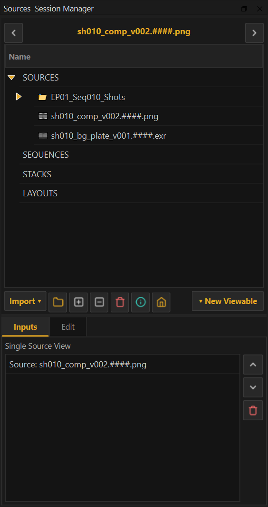
Sources & Session Manager (` / Backtick)
Inspired by Autodesk RV's Session Manager and Premiere Pro's Project Bin, this left dock panel manages all media assets and composite view nodes in the active session:
- Sources Tree: Displays all loaded image sequences, movies, stills, and audio tracks organized into color-coded, collapsible nested folders. Supports drag-and-drop reordering and moving items between folders.
- Sequences (Editorial Playlists): String multiple shots together into a continuous multi-clip timeline with automatic cut boundaries and per-clip In/Out handles.
- Stacks (Multi-Layer Comparison Views): Layer multiple versions or passes together and switch blend modes (Wipe, A/B Switch, Difference, Inverted Diff, Over, Add). Cycle stack layers rapidly with Z / Shift+Z.
- Layouts (Tiled Contact Sheets): Build multi-source grid views (Auto Grid, Side-by-Side, Over/Under, 2x2, 3x3) with selectable proxy resolution scaling (
100%,50%,25%,10%). - Source Context Menu & Version Stepping: Right-click any source to reload media from disk, step version up/down (Alt+Up / Alt+Down), inspect metadata, or assign to Wipe Slot A / Slot B.
2.4 Inbuilt File & Sequence Browser Dock (ui/file_browser_panel.py)
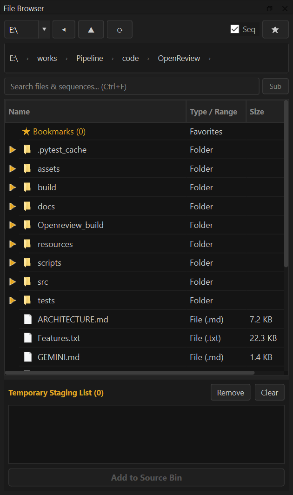
Studio File & Sequence Browser (Ctrl+B)
Eliminates OS file dialog friction by providing a VFX-aware media browser docked directly on the right side of the workspace:
- Automatic Sequence Collapsing: Scans directories and collapses hundreds of numbered frame files (e.g.,
sh010_comp_v002.1001.exr..1080.exr) into a single clean sequence entry displaying frame range and padding. - Persistent Studio Bookmarks: Pin project roots, shot directories, and daily turnover folders to the quick-access Bookmarks bar (persisted in
preferences.json). - Dual Loading Actions: Double-click or press Open to load immediately into the active viewer, or click Add to Bin to append media into the Sources panel without interrupting current playback.
- Session Launchers: Detects
.ovrsession files and lets you either merge/import them into the current workspace or spawn a separate OpenReview OS process instance.
2.5 Seamless Full-Width Timeline & Transport Dock (widgets/timeline.py)
Positioned across the full bottom width of the main window, the Timeline & Transport Dock combines tactile transport buttons, numeric frame/timecode controls, a multi-track frame ruler, and a live RAM cache bar.
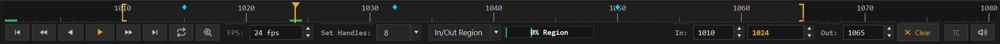
- Visual Track Indicators:
- Playhead & Frame Bubble: High-visibility amber playhead with live frame number or SMPTE Timecode (
HH:MM:SS:FF, toggled via Ctrl+T). - RAM Cache Bar: Highlights cached frames in real time so artists know exactly which regions are ready for 60+ FPS zero-drop playback.
- In / Out Range Brackets: Visual brackets clamping loop boundaries ([ and ], cleared with \).
- Bookmark & Annotation Ticks: Distinct colored markers for bookmarked frames (M, navigated with Alt+Left / Alt+Right) and annotated keyframes (navigated with , / .).
- Playhead & Frame Bubble: High-visibility amber playhead with live frame number or SMPTE Timecode (
- Timeline Zoom & Magnifier (Shift+T): Zoom into long 5,000+ frame editorial timelines using Ctrl+= / Ctrl+- or toggle the Magnified Timeline Scrub Mini-Ruler (Shift+T) for single-frame precision.
2.6 Live Pixel Inspector & Telemetry Status Bar
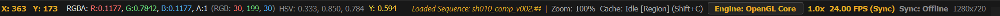
2.7 Top Floating Annotation Capsule Palette (widgets/markup_tools.py)
Pressing X toggles the sleek, auto-centered Floating Annotation Toolbox at the top of the viewport canvas.
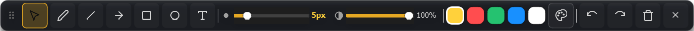
3. All 12 In-Viewport Floating & Dockable HUD Cards
OpenReview provides 12 specialized Photoshop/Nuke-style Floating HUD Cards (widgets/floating_hud.py) that float translucently over the OpenGL viewport. Every HUD card can be dragged anywhere inside the canvas, collapsed, or toggled via keyboard shortcuts and the Review / Color / Audio menus.
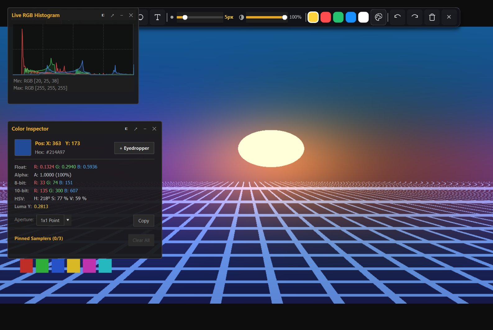
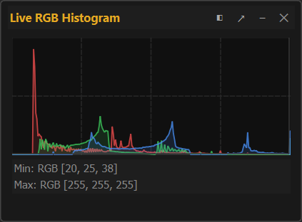
3.1 Live RGB Histogram HUD (H)
Module: widgets/hud_histogram.py
- Computes and plots real-time Red, Green, Blue, and Luminance distribution curves across 256 bins as frames play or scrub.
- Provides instant visual feedback on shadow toe crushing, midtone balance, and highlight clipping.
- Updates dynamically at 60 FPS with minimal CPU overhead using vectorized NumPy histogram binning.
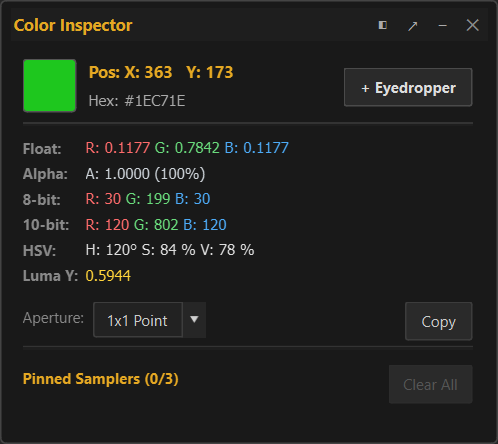
3.2 Pixel Color Inspector & Area Analyzer HUD (F5 / Alt+C)
Module: widgets/hud_color_inspector.py
- Live Cursor Probe: Displays color-coded 32-bit floating-point
RGBA, 8-bit0–255integers,HSV, Hex code, and Rec.709 Luminance (Y) with a split color swatch. - Aperture Sampling Size: Sample a single
1x1pixel or average across3x3,5x5, or9x9pixel neighborhoods to filter out film grain noise. - Persistent Pinned Samplers & Area Box Regions: Pin up to 8 numbered sample points or drag rectangular area sample boxes on the canvas to monitor Min, Max, and Mean RGBA values across frames.
- NaN / Inf / Negative Pixel Diagnostics: Dedicated badge counters alert compositors immediately if a CG render contains corrupted
NaN,Infinity, or negative sub-zero pixel values.
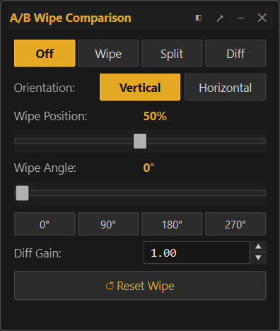
3.3 A/B Wipe Comparison Controller HUD (W)
Module: widgets/hud_wipe.py
- Comparison Modes: Switch between Split Wipe, A/B Switch, Over (Alpha Composite), Add, Difference, and Difference (Inverted).
- Position & Rotation Angle: Precisely control split position (
0%to100%) and wipe line angle (0°to360°). Flip orientation between horizontal and vertical with Shift+W or reset to center with Alt+W. - Swap A & B: One-click button to swap Primary Slot A and Reference Slot B textures.
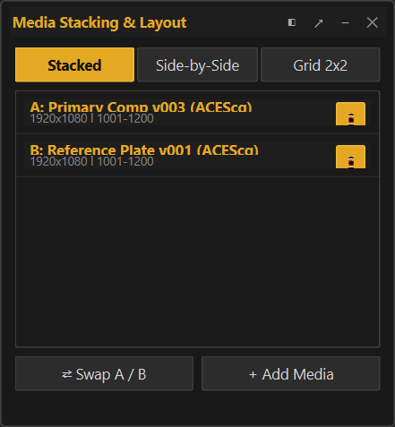
3.4 Media Stacking & Layout HUD
Module: widgets/hud_stacking.py
- Provides in-viewport layer management for active Stack and Layout views.
- Reorder stacked clips, toggle individual layer visibility, adjust blend opacity mix, and configure contact-sheet grid tile arrangements without leaving the canvas.
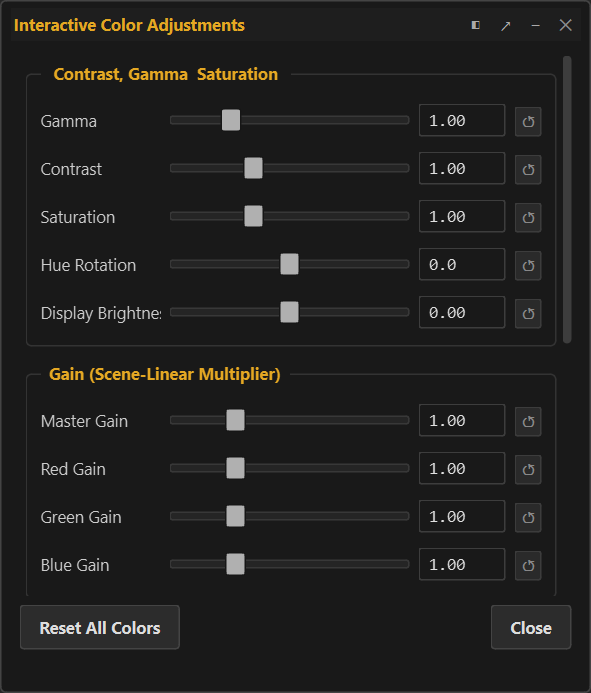
3.5 Interactive Color Adjustments HUD (/)
Module: ui/color_dialog.py
- Primary Grading Controls: Precision sliders and numeric spinboxes for Exposure (EV), Linear Gain, Offset (Black Level), Gamma, Contrast (18% Pivot), Saturation, Hue Rotation (-180° to +180°), and Display Brightness.
- Per-Channel R/G/B Grading: Expandable per-channel controls to adjust Red, Green, and Blue Slope/Offset/Gamma independently for despill and white-balance matching.
- Quick Toggles: Checkboxes for Invert Colors (Shift+I), Show Out-of-Range Zebra, and Reset All (Ctrl+Alt+R).
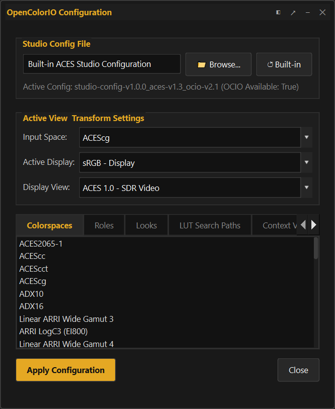
3.6 OpenColorIO (OCIO v2) Studio Configuration HUD
Module: ui/ocio_dialog.py
- Custom
config.ocioLoader: Load studio-wide OCIO v2 configuration files (e.g. ACES 1.3 Studio Config, ACES 2.0, or custom show configs) or auto-detect from the$OCIOenvironment variable. - Display, View & Input Space Selection: Configure active Display device (sRGB, Rec.709, DCI-P3, Rec.2020), View Transform (ACES 1.0 SDR-video, Un-tone-mapped, Raw), and default Working/Input Space.
- LUT Search Paths: Manage studio LUT directory search paths for automatic
.cube,.3dl, and.cdlresolution.
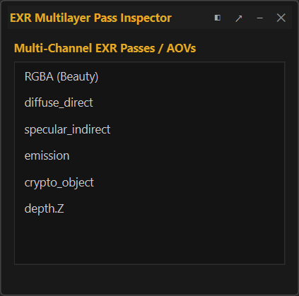
3.7a EXR Multilayer Pass Inspector HUD
Module: widgets/hud_layers.py — Lists all embedded AOV render layers inside multi-part OpenEXR files (e.g. RGBA Beauty, diffuse_direct, specular_indirect, emission, crypto_object, depth.Z) for single-click pass switching.
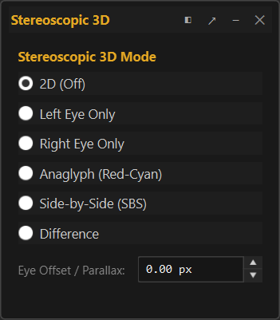
3.7b Stereoscopic 3D HUD
Module: widgets/hud_stereo.py — Controls Stereo 3D display mode (2D Off, Left Eye, Right Eye, Red-Cyan Anaglyph, Side-by-Side, Difference), eye swapping, and horizontal disparity convergence offset in pixels.
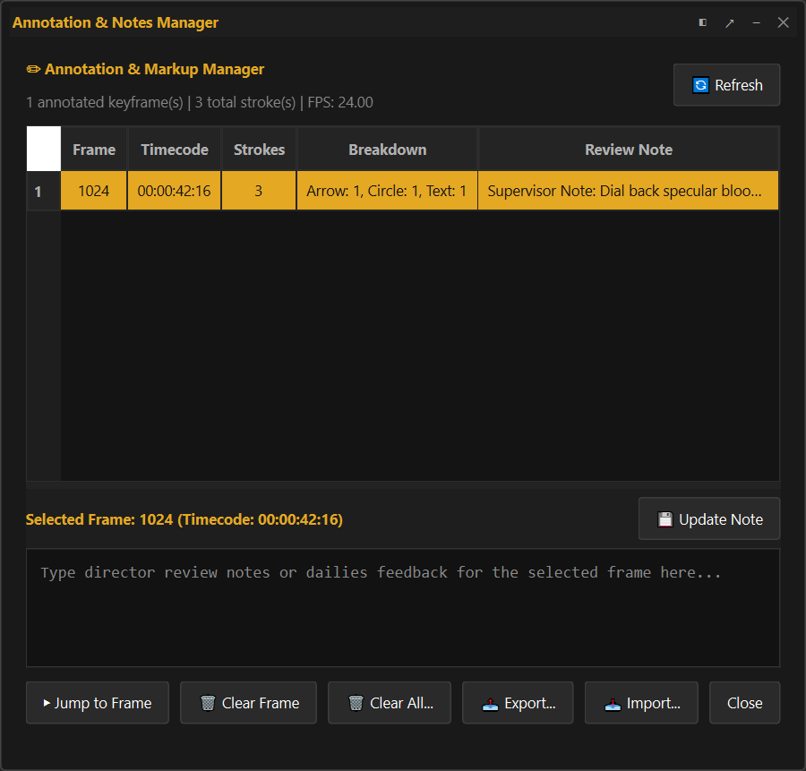
3.8 Annotation & Review Notes Manager HUD (Ctrl+Shift+A)
Module: ui/annotation_manager_dialog.py
- Annotated Keyframe Browser: Displays a live table of every frame containing vector drawings or text review notes, showing stroke counts by shape type and supervisor note summaries.
- Instant Frame Jump: Click any row in the table to seek the viewport and timeline directly to that annotated keyframe.
- Per-Frame Review Notes Editor: Type detailed supervisor instructions, artist feedback, or ShotGrid task notes linked to the current frame.
- Multi-Format Review Export & Import: Export all session notes and burned-in annotated reference frames to
JSON,CSV(spreadsheet/ShotGrid import), or formattedMarkdownreview reports.
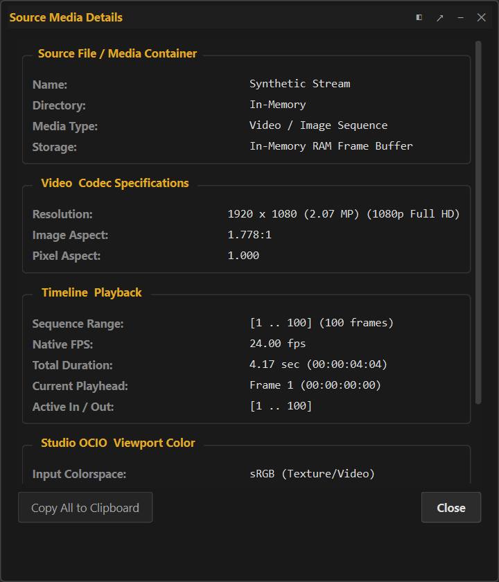
3.9 Source Media Details & Metadata Inspector HUD (I)
Module: ui/image_info_dialog.py
- Displays comprehensive technical metadata extracted from the active file or sequence: full file path, container format, compression codec (e.g. OpenEXR PIZ/DWAA, ProRes 4444), native resolution, pixel aspect ratio, bit depth, auto-detected color space, frame rate, frame range, SMPTE timecode, and EXR header attributes (render host, Nuke/Houdini version, camera focal length).
- Includes a Copy All Metadata button for pasting technical specs directly into bug reports or pipeline tickets.
4. Studio Dialogs, Export Pipeline & Diagnostics
In addition to floating HUDs, OpenReview includes dedicated modal and non-modal dialogs for media rendering, plugin management, runtime performance profiling, and diagnostic logging.
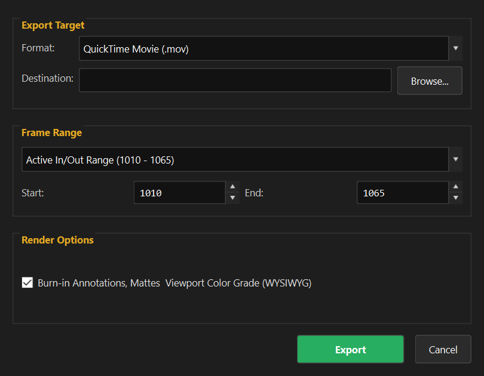
.mov, PNG sequences, JPEG sequences, or single-frame snapshots with optional Burn-In Annotations & Color Grading.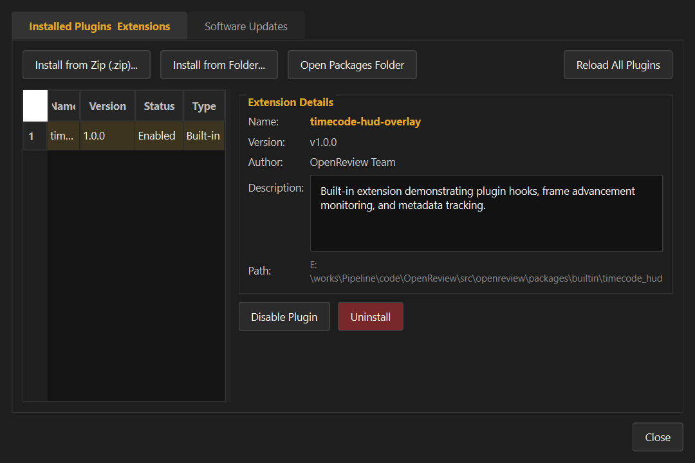
.zip archives, or uninstall studio plugins and check for application updates.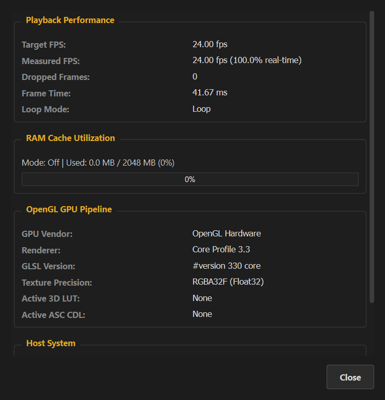
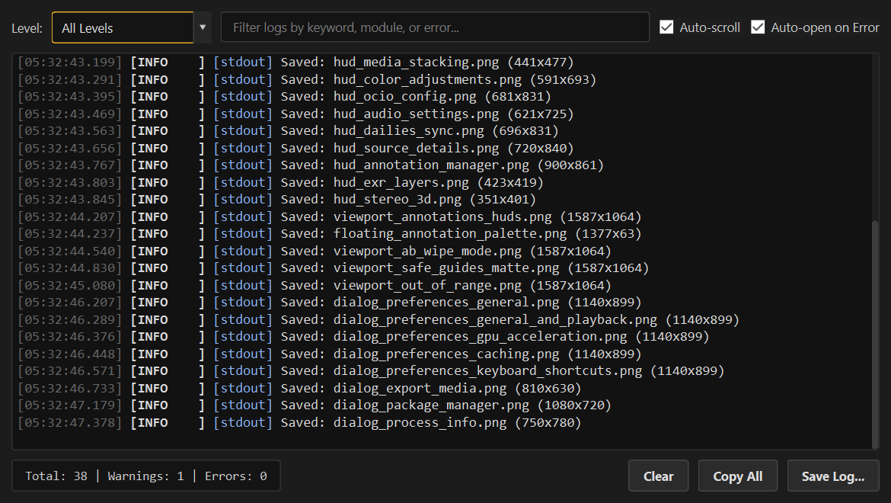
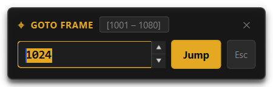
5. Audio System & Sub-Frame Synchronization
OpenReview features a dedicated, studio-grade AudioEngine (audio/audio_engine.py) built on PySide6.QtMultimedia (QMediaPlayer and QAudioOutput). It supports both embedded audio tracks inside video containers (.mov, .mp4, .mkv, .avi) and external standalone audio files (.wav, .aiff, .flac, .mp3, .aac, .ogg, .m4a) paired alongside image sequences.
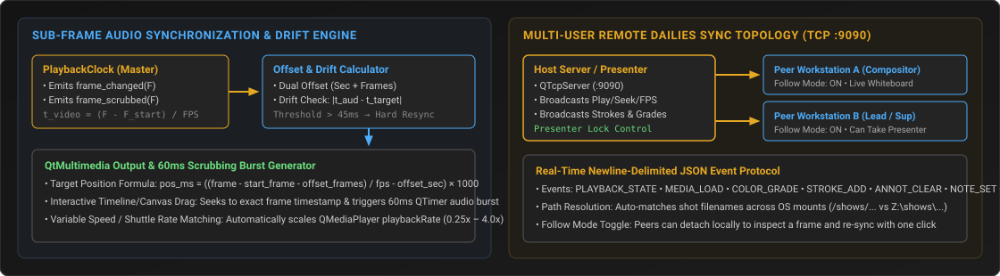
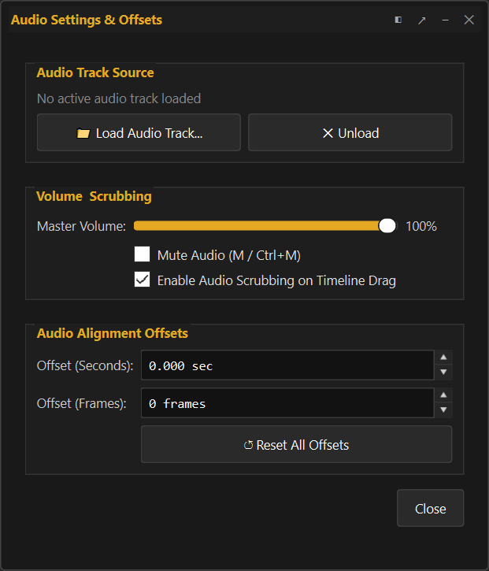
Audio Engine Architecture & Controls
- Mathematical Frame-to-Millisecond Mapping: Given sequence start frame $F_{\text{start}}$, frame rate $\text{FPS}$, frame offset $\Delta F$, and seconds offset $\Delta S$, the target audio timestamp $T_{\text{ms}}$ for any frame $F$ is computed as:
rel_frames = (F - start_frame) - offset_frames rel_seconds = (rel_frames / fps) - offset_seconds target_ms = max(0, int(round(rel_seconds * 1000.0))) - Drift Prevention & Hard Resync Threshold (45ms): During continuous playback,
AudioEngine.sync_to_frame(frame, is_playing=True)compares the live hardware audio buffer position againsttarget_mson every tick. If hardware clock drift exceeds 45 milliseconds (approx. 1 frame at 24 FPS), the engine executes an immediate sub-frame re-seek—preventing cumulative lip-sync drift across long reels without introducing audible clicks during normal lock. - Interactive 60ms Audio Scrubbing Bursts: When dragging the playhead on the timeline or scrubbing horizontally on the viewport canvas with Audio Scrubbing on Drag enabled,
AudioEngine.scrub_at_frame(frame)seeks totarget_ms, starts playback at1.0xrate, and arms a single-shot 60msQTimer(`_scrub_timer`) that automatically pauses the buffer—allowing animators and editors to hear exact dialogue phonemes and transient hits frame-by-frame. - Variable Shuttle Rate Matching: When shuttling via J / L, the audio engine scales
QMediaPlayer.setPlaybackRate()dynamically between0.25xand4.0x. - Dual Offset Calibration: Artists can slip audio alignment using both Offset (Seconds) (e.g.
+0.125s) and Offset (Frames) (e.g.-2 frames) simultaneously to compensate for 2-pop leader offsets or editorial handle trims.
6. Multi-User Remote Dailies Synchronization
The Remote Dailies Sync Engine (network/sync_engine.py, toggled via Ctrl+Shift+D) enables distributed VFX teams, leads, and supervisors to conduct real-time synchronized review sessions over LAN or VPN without video-conferencing compression artifacts—each participant views uncompressed native EXR/DPX media locally on their own calibrated monitor while playback, grading, and annotations stay locked in sync.
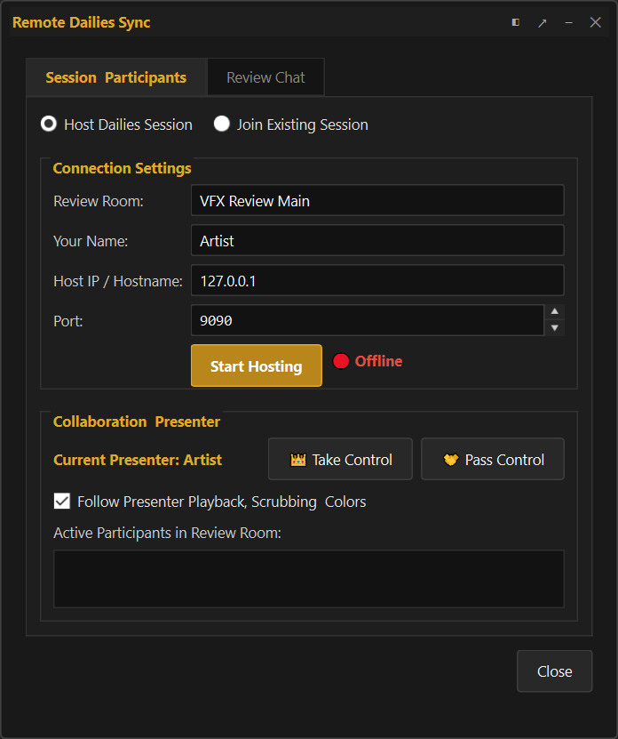
Collaborative Sync Features (Ctrl+Shift+D)
- Host Server & Peer Client Architecture: Any OpenReview workstation can click Start Hosting (default TCP port
9090) to create a named Dailies Room, while other workstations connect via IP and port. - Presenter Lock & Hand-Off: The designated Presenter drives global transport (Play, Pause, Seek, FPS, Loop Mode), active media loading, and live color grading (Exposure, Gain, Gamma, Saturation). Any participant can request or be granted Presenter control.
- Follow Mode Toggle: Connected peers have a Follow Presenter toggle. A compositor can uncheck Follow to temporarily inspect an earlier frame locally, then re-enable Follow to snap back to the presenter's playhead.
- Live Collaborative Whiteboard & Chat: Vector strokes drawn by any participant (`STROKE_ADD`), frame clears (`ANNOT_CLEAR`), supervisor frame notes (`NOTE_SET`), and room chat messages (`CHAT`) broadcast instantaneously to all connected peers.
7. Preferences, GPU Configuration & Persistent Storage
OpenReview persists all workstation settings via PreferencesManager (core/preferences.py) inside a human-readable JSON file at ~/.openreview/preferences.json (with automatic synchronization to OS-native QSettings("OpenReview", "OpenReview") as a resilient fallback). Session files are saved in .ovr JSON format via models/session.py.
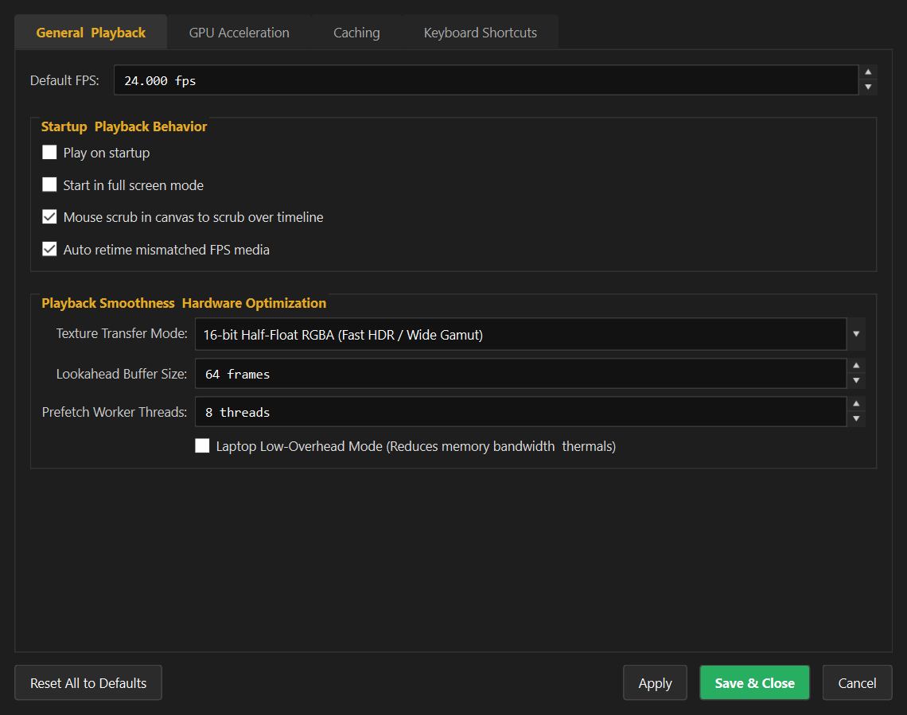
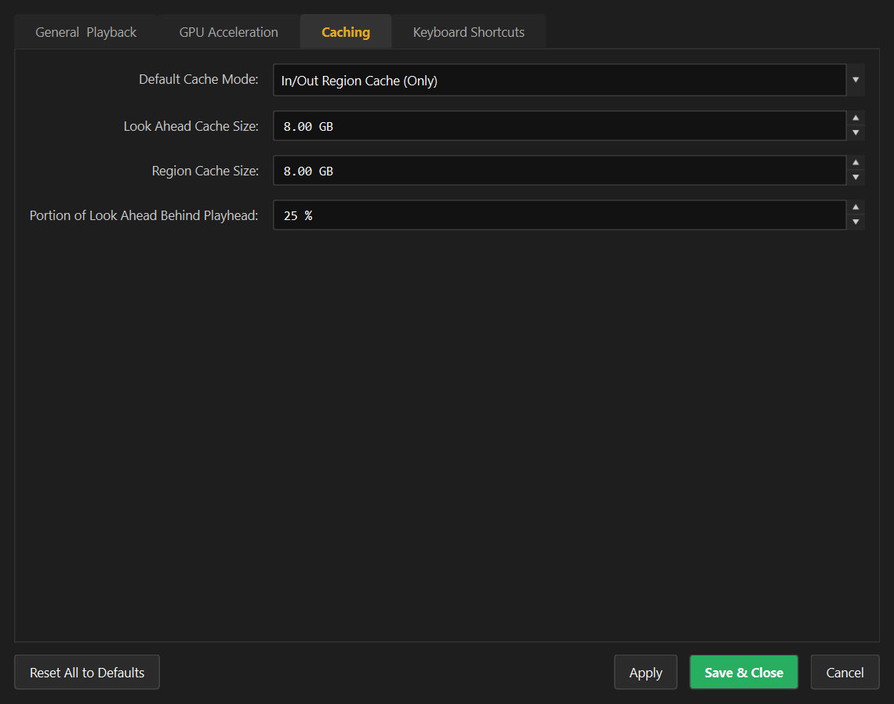
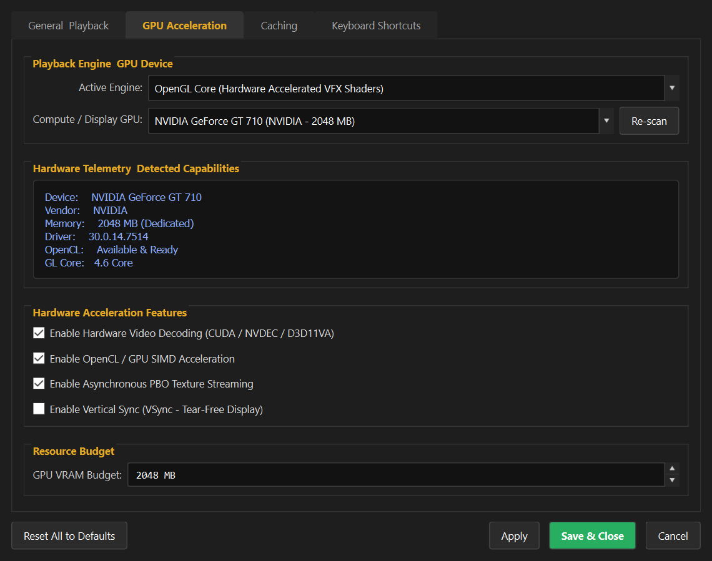
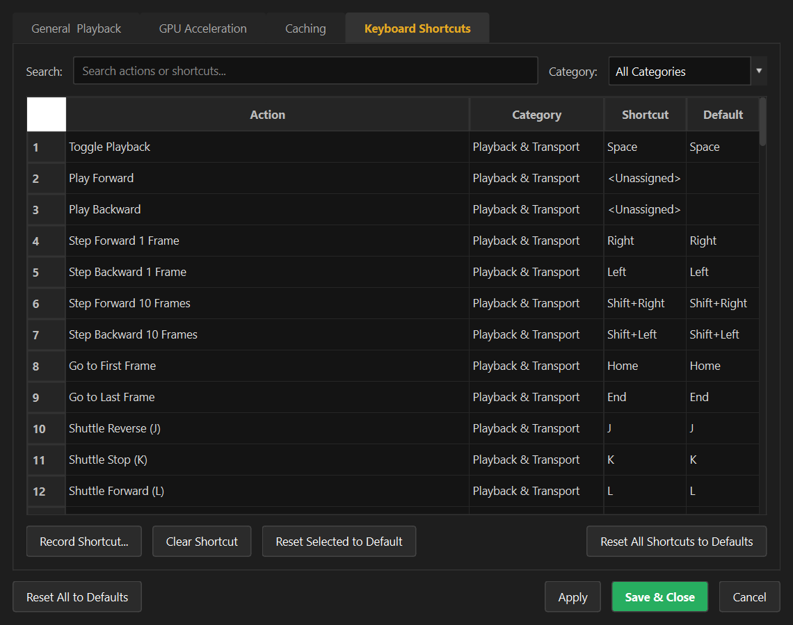
Complete ~/.openreview/preferences.json Schema Reference
| JSON Key | Type | Default | Description |
|---|---|---|---|
default_fps |
float |
24.0 |
Default sequence playback frame rate (e.g. 23.976, 24.0, 25.0, 29.97, 30.0, 48.0, 60.0). |
play_all_frames |
bool |
false |
When true, steps through every frame sequentially without dropping frames; when false, maintains strict wall-clock real-time sync. |
default_cache_mode |
str |
"region" |
Initial RAM cache strategy on startup: "off", "play_ahead", "region", or "all". |
lookahead_cache_gb / region_cache_gb |
float |
4.0 |
Maximum system RAM allocated to the RingBufferCache in Gigabytes. |
lookahead_behind_pct |
float |
20.0 |
Percentage of cache window retained behind the playhead for reverse stepping. |
playback_texture_mode |
str |
"auto" |
GPU texture precision: "auto" (RGBA16F on desktop GPUs), "rgba8" (fast laptop), "rgba16f", or "rgba32f" (full float). |
prefetch_buffer_size |
int |
64 |
Number of frames queued ahead in the asynchronous reader prefetch window. |
prefetch_worker_threads |
int |
6 |
Number of concurrent background disk I/O worker threads decoding frames. |
playback_engine |
str |
"opengl_core" |
Active rendering backend: "opengl_core", "async_pbo" (DMA streaming), or "software_safe". |
enable_pbo_streaming |
bool |
true |
Enables double-buffered OpenGL Pixel Buffer Object DMA texture uploads. |
gpu_vram_limit_mb |
float |
2048.0 |
VRAM budget ceiling in Megabytes for GPU texture pools. |
ocio_config_path, ocio_display, ocio_view, ocio_input_space |
str |
"" |
Persistent studio OpenColorIO v2 configuration file path and default color transform selections. |
shortcuts |
dict[str, str] |
{} |
User-customized keybinding overrides keyed by canonical action_id (e.g. "color.invert_toggle": "Shift+I"). |
recent_files / file_browser_bookmarks |
list |
[] |
Recently opened media/sessions (up to 15 items) and pinned File Browser studio directory bookmarks. |